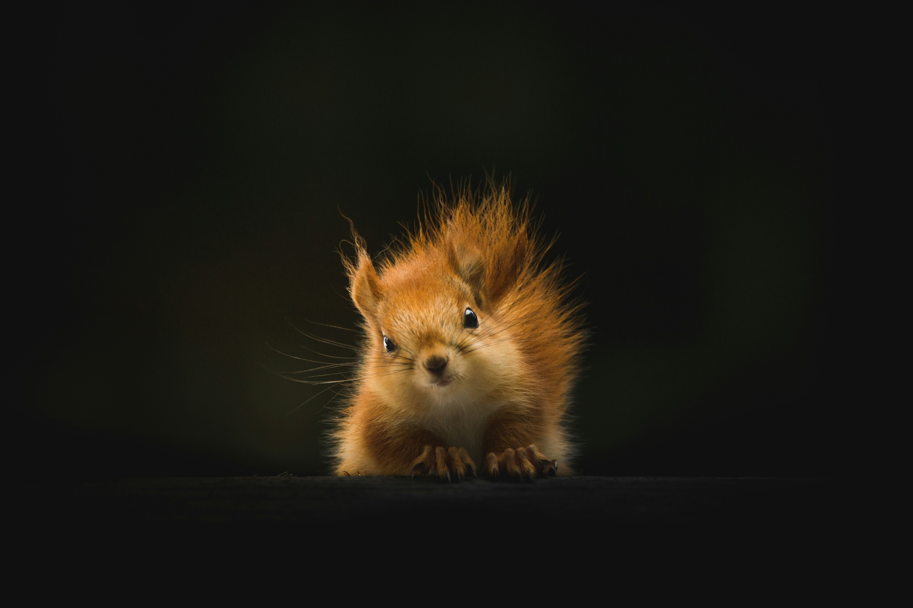

-

Animals
kingfisher
The kingfisher, with its vibrant plumage and swift movements, is a master of the waterways. Found near streams, rivers, and lakes worldwide, these charismatic birds are renowned for their exceptional fishing skills. With keen eyesight and precise dives, they plunge into the water with lightning speed to catch small fish and aquatic insects. Their colorful feathers shimmer in the sunlight, adding a touch of brilliance to the serene landscape of water and greenery. Kingfishers play a vital role in maintaining the health of aquatic ecosystems, making them both a symbol of beauty and a guardian of nature's balance.
-

Animals
turtle
Turtles, renowned for their protective shells and deliberate movements, inhabit various environments, from serene oceans to meandering freshwater rivers. Their iconic appearance symbolizes longevity and steadfastness, reflecting their ability to adapt to changing conditions over centuries. Despite their unhurried demeanor, turtles can swiftly navigate through water with surprising agility, showcasing their resilience in the face of challenges. Their gentle disposition and tranquil presence make them a cherished sight for nature enthusiasts, offering moments of serenity amidst the bustling natural world. With a history dating back millions of years, turtles embody the essence of endurance and survival, inspiring admiration and respect among humans.
-

Animals
squirell
Squirrels, renowned for their bushy tails and agile movements, are a common sight in forests, parks, and even bustling urban environments. With their remarkable agility and resourcefulness, they effortlessly traverse treetops and cityscapes alike, showcasing their adaptability to diverse habitats. While famous for their habit of storing nuts, squirrels play a crucial role in ecosystem health by dispersing seeds and serving as prey for predators, maintaining balance in their ecosystems. Their playful demeanor and curious antics often delight observers, adding charm to outdoor settings and bringing a touch of nature to urban landscapes. Despite their small size, squirrels demonstrate intelligence and cunning, finding innovative ways to overcome challenges and secure food sources. Through their ubiquitous presence and vital ecological role, squirrels have become beloved icons of the natural world, capturing the imagination of people worldwide.
-

Animals
dog
Dogs, with their wagging tails and soulful eyes, embody loyalty and devotion in the animal kingdom. From playful puppies to faithful companions, they form deep bonds with their human families, offering unwavering love and companionship. Whether frolicking in parks or standing guard at home, dogs demonstrate their dedication and protective instincts. With a diverse array of breeds, each dog brings its own unique personality and talents to the table. Known for their boundless energy and enthusiasm, dogs enrich our lives with their playful antics and affectionate gestures. Whether fetching balls or curling up by the fireplace, dogs bring joy and warmth to our homes. As faithful friends and loyal guardians, dogs leave paw prints on our hearts, reminding us of the enduring bond between humans and canines.
-

Animals
butterfly
Butterflies, adorned with delicate wings and an array of vibrant colors, enchant observers with their ethereal beauty and graceful flight. Their life cycle, marked by a fascinating metamorphosis from caterpillar to butterfly, symbolizes transformation, renewal, and the enduring cycle of life. As essential pollinators, butterflies contribute to the reproduction of flowering plants, fostering biodiversity and sustaining ecosystem balance. Their delicate interactions with various plant species highlight the interconnectedness of organisms within ecosystems, underscoring the importance of preserving habitats for these enchanting insects. Through their ephemeral yet profound presence, butterflies inspire wonder and appreciation for the natural world, captivating hearts and minds with their ephemeral elegance.
-

Animals
cat
Cats, with their sleek fur and mesmerizing eyes, epitomize elegance and independence in the animal kingdom. Graceful and agile, they prowl through homes and gardens, showcasing their natural hunting instincts. Despite their aloof exterior, cats form deep bonds with their human companions, offering comfort and companionship. Known for their purring and affectionate nuzzles, they bring joy and warmth to households around the world. From playful antics to serene lounging, cats exhibit a wide range of behaviors that endear them to humans. Whether chasing shadows or basking in sunbeams, cats lead lives filled with curiosity and contentment. With their enigmatic personalities and gentle purrs, cats enrich our lives with their unique charm and companionship.
-

Animals
Deer
Deer, with their elegant movements and majestic antlers, embody grace and tranquility as they roam through forests, meadows, and grasslands. These herbivores graze on leaves, twigs, and grasses, contributing to the shaping of plant communities and landscapes. Revered for their beauty, deer also play a vital ecological role by dispersing seeds through their movements and providing sustenance for various predators. As symbols of gentleness and harmony with nature, deer remind us of the interconnectedness of all living beings and the importance of preserving their habitats for generations to come.
-

Animals
fox
The fox, renowned for its cunning and agility, traverses a diverse range of landscapes, from dense forests to sprawling plains and even urban environments worldwide. Its striking bushy tail and sleek fur coat not only provide insulation but also aid in camouflage, allowing it to move with stealth and grace. Despite its portrayal as sly in folklore, the fox is an intelligent predator essential for maintaining ecological balance in its habitat. Through its hunting prowess and adaptable nature, the fox serves as a keystone species, regulating prey populations and contributing to the overall health of ecosystems.
-

Animals
rabbit
Rabbits, with their distinctive long ears and fluffy tails, are renowned for their prolific breeding habits and widespread presence across various habitats worldwide. Their remarkable agility and speed serve as effective defense mechanisms against predators, ensuring their survival in diverse environments. Beyond their charming appearance, rabbits play a crucial ecological role as herbivores, shaping plant communities through their voracious appetite and selective grazing habits. Despite their small size, these resilient creatures have a significant impact on ecosystem dynamics, influencing plant growth, distribution, and nutrient cycling.